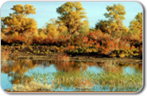
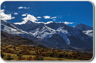
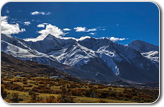
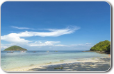
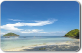

党的十八大以来，以习近平同志为总书记的党中央高度重视生态文明建设和环境保护工作，提出了一系列新思想、新要求，作出了一系列重大部署。在党中央、国务院的坚强领导下，各单位、各部门和社会各界共同努力，从容应对挑战，奋力攻坚克难，紧紧围绕建设美丽中国深化生态文明体制改革，以大气、水、土壤污染治理为重点坚决向污染宣战，我国生态环境保护取得明显成效。环境治理工作全面推进，环境质量有所改善；科学制定环保标准，环评审批严格把关；淘汰、化解落后产能力度加大，产业结构转型升级速度加快；生态系统保护与修复成效显著，生物多样性得到有效保护；生态文明示范建设有序开展，经济社会与生态环境协调发展；环境法治化水平显著提升，新环保法威慑力日益彰显；改革举措陆续推出，绿色发展活力不断增强；信息公开力度持续加大，全社会生态文明意识明显提升。面对新形势新任务，环境保护工作将继续以改善环境质量为核心，坚决打好污染防治三大战役，大力推进技术创新，倡导全民参与，推动绿色消费革命，统筹谋划好“十三五”生态环境保护规划，为建设美丽中国和实现中华民族伟大复兴的中国梦增光添彩。
各地典范环境保护实例

环境保护为 新疆跨越跨越式 发展保驾护航
近年来，自治区全面贯彻中央决策部署，坚持以人为本、民生优先，着力解决了一批危害群众健康、影响可持续发展的水污染、大气污染等突出环境问题，各项环保工作均取得显著成效。 据了解，2008年以来，新疆城市环境空气质量略有好转，好于二级的天数由“十五”末的73.9％提高到85.5％，10个城市空气质量达到国家二级以上标准。乌鲁木齐市空气质量好于二级天数达到71.8％，比“十五”末增加1.7个百分点。全区地表水环境质量有所改善，监测河流Ⅰ～Ⅲ类优良水质断面比例由80.3％提高到88.3％，城市集中式饮用水水源地总体水质良好，水质达标率为84.6％。实施主要污染物总量控制，完成减排项目208个。实施了乌鲁木齐市大气污染防治及伊犁河、额尔齐斯河、博斯腾湖、吐曼河流域综合整治等工程，区域环境质量得到一定改善。

2016年我国深入实施“大气十条”，多项大气质量改善措施齐头并进。截至当年11月底，全国燃煤机组累计完成超低排放改造4.25亿千瓦，占煤电总装机容量的47%，河北、河南等省基本完成改造任务;散煤替代、燃煤小锅炉淘汰、工业企业提标改造等治理任务加快推进;全国累计淘汰黄标车和老旧车404.58万辆，完成全年淘汰任务的106.5%。同时，全面完成1436个国控环境空气质量监测城市站监测事权上收任务。 2016年我国全面推动落实“水十条”，建成了由3186个监测断面组成的国家地表水监测网。落实长江经济带大保护工作，完成11省(市)126个地级以上城市全部319个集中式饮用水水源保护区划定;同时启动上下游横向生态补偿试点，组织排查城市黑臭水体，开展农村环境综合整治。
 

加快污染防治法 立法，推动土壤 污染治理
生态保护和 发展需求中 求双赢
针对全市工业结构偏重现状，全市围绕绿色崛起，高举结构调整大旗，出台工业经济3年跃升计划，通过高新计划推进引领调整、优势产业集聚推动调整、创新扶持政策激励调整、资源优化整合倒逼调整等手段，培植形成了输变电设备、冶金和金属加工、机械装备制造、风电配件、新型建材、食品医药等支柱产业和产业集群。目前，全市4000多家制造业企业中，拥有年纳税销售收入超百亿元企业有1家，超50亿企业有3家，超10亿元企业有7家。 结构调整让溧阳市工业从注重速度转变成崇尚质量，正因为如此，一大批企业在市场搏战中成为称雄行业的巨头。新出炉的“中国民营企业500家”名录上，溧阳有4家企业同登荣榜，创造了产业发展新奇迹。
 
